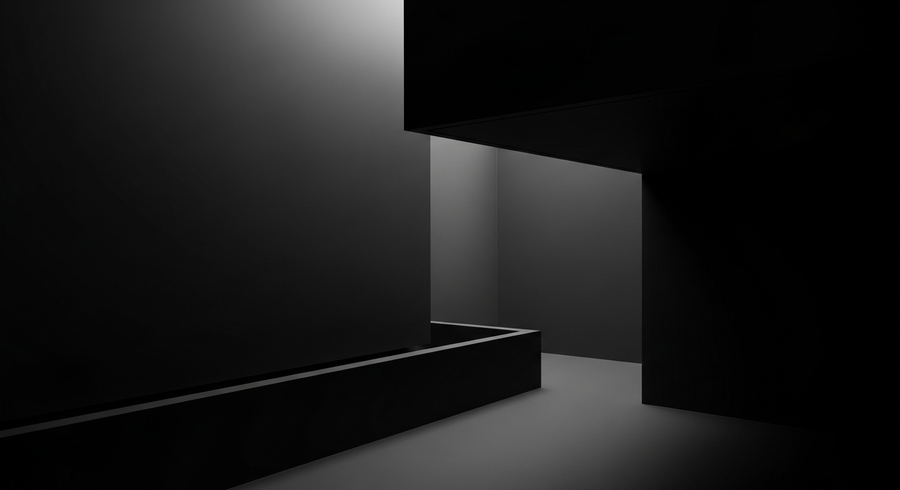
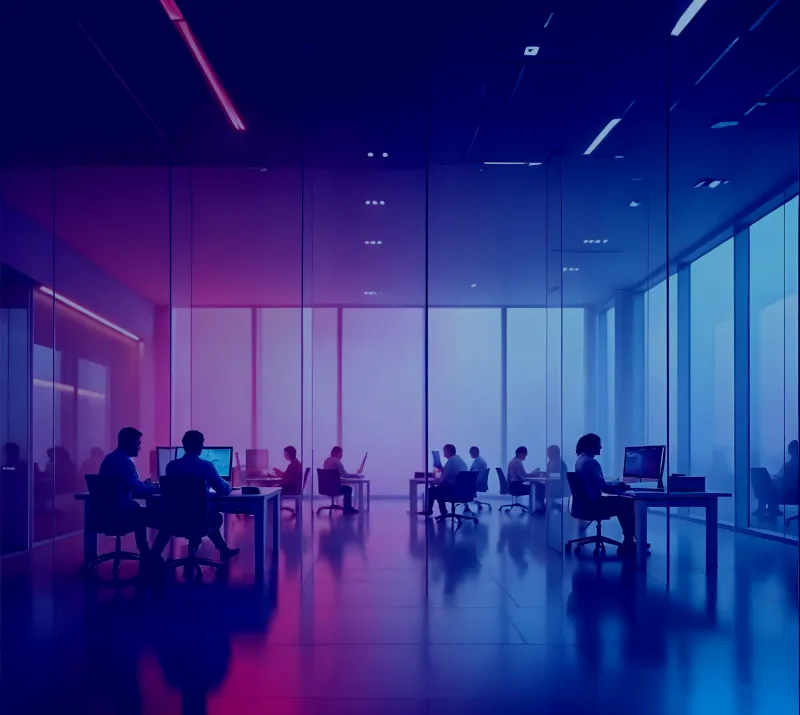

Como eu penso produto
Antes de discutir soluções e funcionalidades, busco o que realmente sustenta o produto: objetivos e clareza estratégica.
Onde a empresa quer chegar
Como o produto gera receita e quais os potenciais retornos
Quem é de fato o seu cliente ideal e seu contexto real
O contexto do produto, de onde ele veio e por que é preciso mudar
Minhas decisões são guiadas por:
Alinhamento com o objetivo estratégico
Impacto real no negócio
Benefício real no dia a dia do cliente
Relação entre custo e retorno
"Ideias que não contribuem diretamente para o caminho definido — mesmo sendo boas — ficam fora."
Foco é o que permite que o produto avance.
Ao longo da minha trajetória, atuei em contextos onde decisões de produto precisavam ser tomadas com clareza, responsabilidade e visão de longo prazo.
Participei diretamente de comitês de produto, trabalhando junto com fundadores, e C-levels para definir direcionamento estratégico, prioridades e roadmap.
Fui lider de produto em uma startup Edtech Alemã assumindo visão completa, estruturando estratégia, execução e posicionamento de mercado.
Essas experiências consolidaram minha atuação como alguém responsável por transformar visão em direção concreta.
Atuo como Product Manager Estratégico, trabalhando próximo à liderança para definir objetivos, estruturar roadmap e garantir clareza na execução.
Meu papel é conectar visão e realidade: transformar decisões estratégicas em planos possíveis, comunicar prioridades ao time técnico e sustentar o foco necessário para que o produto avance.
Gerenciamento de roadmap estratégico e priorização
Definição de objetivos de produto alinhados ao negócio
Conexão entre os times de engenharia, design e stakeholders
Garantia de foco e clareza para que as entregas aconteçam
Minha trajetória começou no design, com foco em aplicações digitais, ainda antes da consolidação dos produtos digitais como conhecemos hoje.
Sou formado em Desenho Industrial - Programação Visual e possuo pós-graduação em Design de Hipermídia, uma das primeiras formações voltadas ao design interativo, software e experiências digitais no Brasil.
Fui Co-fundador e diretor de criação de uma agência de publicidade, onde desenvolvi forte vivência em negócio, relacionamento com clientes e entendimento profundo de dores reais.
Com o tempo, minha atuação naturalmente evoluiu para o universo de produtos digitais e software. Passei por funções de UX Designer, Product Designer e Product Manager, unindo formação, estudo e prática.

Universidade Positivo - Curitiba-PR
Universidade Anhembi Morumbi - São Paulo-SP
Tera
Udacity
Escola Superior de Propaganda e Marketing - São Paulo-SP
Escola Superior de Propaganda e Marketing - São Paulo-SP